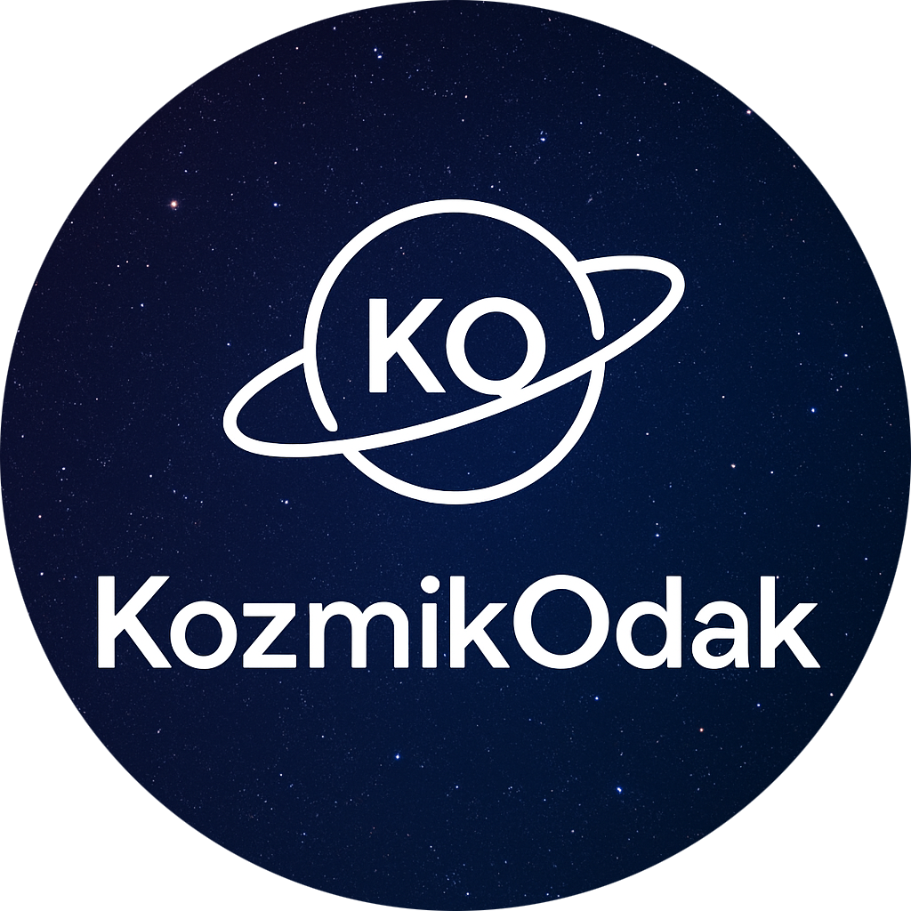

Blog
🌌 Evrenin Derinlikleri
Evrenin bilinmeyen yönlerini birlikte keşfediyoruz.
🪐 Astronomi Notları
Gezegenler, yıldızlar ve galaksiler hakkında yazılar.
🚀 Bilim & Teknoloji
Uzay teknolojileri ve bilimsel gelişmeler.

KozmikOdakEvrenin bilinmeyen yönlerini birlikte keşfediyoruz.
Gezegenler, yıldızlar ve galaksiler hakkında yazılar.
Uzay teknolojileri ve bilimsel gelişmeler.